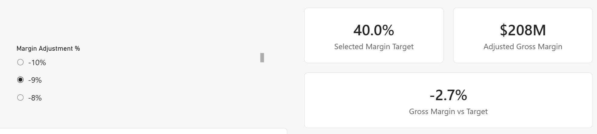
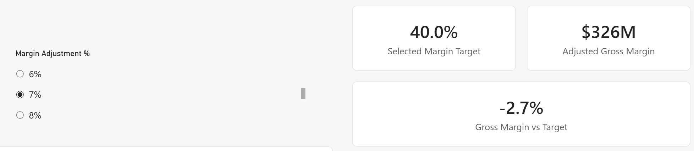

What you will produce
- Scenario comparison built on the Lab 04 what-if parameter
- Driver-analysis options
- AI feature validation
- Gov-safe fallback map
Step-by-step walkthrough
- Continue from your Lab 05 report.
- Open Power BI Desktop.
- Open the same Power BI file you completed through Lab 05, from
pbi-local\or your saved workshop solution folder. Keep working in that same file. - Go to
Sales & Margin Analysis, the page where you already built theMargin Adjustment %what-if parameter and theAdjusted Gross Margin/Adjusted Gross Margin %measures in Lab 04. - Move the
Margin Adjustment %slicer from0to a positive and a negative value and confirm theAdjusted Gross Margincard and margin detail table still respond. If they do not, fix that scenario before adding the AI-aware visuals in this lab.
FYI — this lab reuses your existing what-if parameter.
You already built the Gov-ready what-if scenario core in Lab 04:Margin Adjustment %(native numeric range parameter, decimal,-0.1to0.2) plus[Selected Margin Adjustment %],[Adjusted Gross Margin], and[Adjusted Gross Margin %]. Lab 06 does not rebuild that parameter — it uses those same fields as the input to decomposition, forecasting, and other AI-aware analysis so you can see how a governed scenario input feeds richer analytics. - Add a scenario comparison visual driven by the existing parameter.
- Duplicate the
Sales & Margin Analysispage (right-click the page tab, click Duplicate page) so you have a safe practice area, and rename the copyScenario & AI Exploration. - On the new page, add a clustered column chart or line chart that compares
[Gross Margin]and[Adjusted Gross Margin]byDimTerritory[TerritoryName]orDimProductCategory[ProductCategory]. - Move the existing
Margin Adjustment %slicer to a clear position near the top of this page if it is not already visible. - Change the slicer from
0to a positive and negative value and confirm the comparison chart updates alongside the cards you built in Lab 04.

Scenario page before adjustment (slicer at 0%). 
Scenario page after adjustment, with margin cards and chart updated. - Duplicate the
- Evaluate the decomposition tree only if it is available in your tenant.
- Stay on the
Scenario & AI Explorationpage (or add it now if you have not already: right-click the page tab, Insert page, and add a page navigator and heading textbox matching your other pages). - On the Visualizations pane, add a Decomposition tree visual if the visual is available and approved in this environment.
- Drag
[Sales Amount]into Analyze. - Drag
DimTerritory[TerritoryName],DimProductCategory[ProductCategory],DimCustomer[CustomerType], andDimSegment[Segment]into Explain by, in that order. - Try a manual drill path first, then try the AI-driven High value or Low value split only if that option is enabled.
- If the visual is unavailable or still marked Verify for Gov, build the fallback instead: a matrix with the same fields nested on rows plus the Lab 4 drillthrough page for detail.
FYI — decomposition tree manual vs. AI splits.
A manual path answers a business question you already have, such as breakingSales Amountdown byTerritoryNamethenProductCategory. The AI-driven High value or Low value split instead searches the fields in Explain by for the next branch that most strongly separates the result, which is useful for discovery but still needs human judgment. - Stay on the
- Evaluate forecasting or anomaly detection only if available.
- Add a line chart with your date field on the X-axis and
Sales Amountas the value. - Open the Analytics pane for that visual.
- If forecasting is enabled, add a Forecast and set the forecast length and confidence interval for the scenario you want to discuss.
- If anomaly detection is enabled on the supported visual, turn it on and review the highlighted points.
- If neither feature is approved here, use the fallback path instead: create a rolling-average measure, a prior-period comparison measure, and a threshold flag such as
Below 90% of prior period.
FYI — what forecasting and anomaly detection are assuming.
These features are not magic predictions; they infer patterns from the history on your line chart and expose how uncertain that inference is.
- Forecast extends the series based on historical trend and seasonality, so weak or sparse history makes the forecast less trustworthy.
- Confidence interval shows a likely range, not a guaranteed outcome; wider bands mean more uncertainty.
- Anomaly detection flags points that differ from the expected pattern, but a flagged point can be either a real business event or just noisy data that needs explanation.
- Add a line chart with your date field on the X-axis and
- Evaluate Key influencers only if available.
- Add a Key influencers visual only if the tenant supports and approves it, on the same
Scenario & AI Explorationpage. - Drag
[Sales Amount]into Explain by's target well (the outcome you want to understand). - Add
DimTerritory[TerritoryName],DimCustomer[CustomerType],DimProductCategory[ProductCategory], andDimSegment[Segment]as explanatory fields so the visual has four meaningful drivers to compare. - Review the ranked influencers and segments with the class, and explicitly discuss correlation versus causation.
- If the visual is unavailable, build the fallback instead with ranked visuals, Top N filters, and
RANKX-based comparisons from Lab 2.
FYI — what Key influencers is actually doing.
The visual statistically compares the chosen outcome, such as[Sales Amount], against the explanatory fields you provide and ranks the factors most associated with a higher or lower result. It is great for surfacing patterns to investigate, but it does not prove that a field caused the result, which is why the lab explicitly calls out correlation versus causation. - Add a Key influencers visual only if the tenant supports and approves it, on the same
- Keep Python/R and Azure ML as optional review topics unless validated.
Do not enable Python/R visuals or Azure ML integration unless runtime approval, package approval, Service support, network egress, identity, region, and data residency have all been validated for this tenant. If those checks are not complete, stay on the Gov-safe path with native visuals or a static pre-scored sample output.
FYI — why governed AI prerequisites matter.
Python/R visuals and Azure ML can introduce package risk, outbound connectivity, identity dependencies, and data-movement questions that do not exist with native visuals alone. In a regulated tenant, the technical feature may work but still be unacceptable until security, region, and residency controls are proven. - Keep Copilot conceptual unless the tenant is validated for it.
If Copilot for Power BI or Fabric has not been validated here, explain the use case conceptually only: what it might summarize, what a prompt might ask, and why every AI-generated measure or narrative still requires human review before it is trusted or shared.
FYI — why human review is still required for AI outputs.
A generated narrative, measure, or explanation may sound confident while still misreading the business meaning of[Gross Margin],[Sales Amount], or the current filter context. Treat AI as a drafting aid: useful for speed, but never the final authority for numbers that will be shared with stakeholders. - Document feature status and the fallback you used.
Record whether each advanced feature is Gov-ready, Verify for Gov, or Commercial-focused in this tenant, then note the fallback pattern you actually used during the lab.
Feature Status What to create or review Fallback What-if parameter Gov-ready Margin Adjustment %and adjusted margin measures (built in Lab 04, reused here)Required core path. Decomposition tree Verify for Gov Driver analysis by territory/product/customer/segment Matrix plus drillthrough. Forecasting Verify for Gov Line chart Analytics pane forecast Rolling average and prior-period comparison. Anomaly detection Verify for Gov Unusual trend identification on supported visuals DAX threshold flags. Key influencers Verify for Gov AI visual for outcome analysis Top N and ranked comparisons. Python/R Verify for Gov Approved runtime/packages only Native visuals. Azure ML Verify for Gov Validated workspace/identity/network/region Static scored output. Copilot Commercial-focused / Verify for Gov Conceptual unless tenant, capacity, licensing, and data boundaries are validated Human-authored explanation. Decision framework Required documentation Available, approved, residency acceptable, fallback identified Use non-AI path when any answer is no.
Answer key
Show the Lab 04 what-if measure pattern used in this lab
These are the actual measures from Sales & Margin Analysis — you built them in Lab 04 and this lab reuses them as-is. Confirm your model matches before continuing.
Selected Margin Adjustment % =
SELECTEDVALUE ( 'Margin Adjustment %'[Margin Adjustment %], 0 )
Adjusted Gross Margin % =
[Gross Margin %] + [Selected Margin Adjustment %]
Adjusted Gross Margin =
[Adjusted Gross Margin %] * [Sales Amount]
Adjusted Margin vs Base =
[Adjusted Gross Margin] - [Gross Margin]